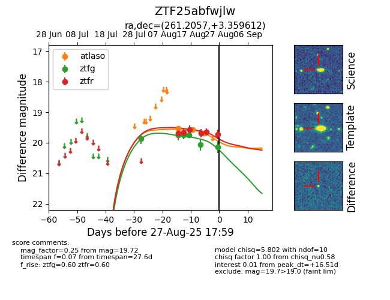

Target ZTF25abfwjlw at 2025-08-27 17:59, see:
FINK: fink-portal.org/ZTF25abfwjlw
Lasair: lasair-ztf.lsst.ac.uk/objects/ZTF25abfwjlw
ALeRCE: alerce.online/object/ZTF25abfwjlw
alt names
ZTF25abfwjlw (ztf,fink)
coordinates:
equatorial (ra, dec) = (261.2057,+3.35961)
galactic (l, b) = (25.8171,+20.76648)
photometry
last atlaso=19.68, ztfg=20.14, ztfr=19.72
3 atlaso, 6 ztfg, 6 ztfr detections
